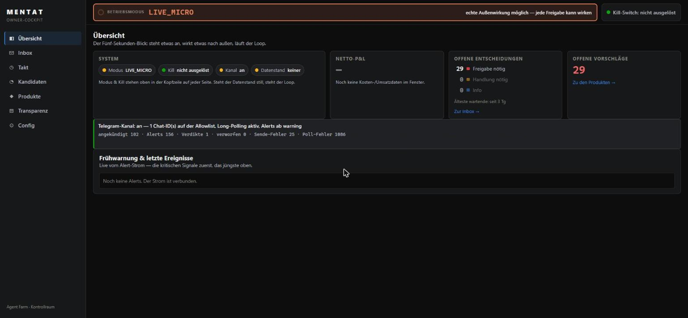
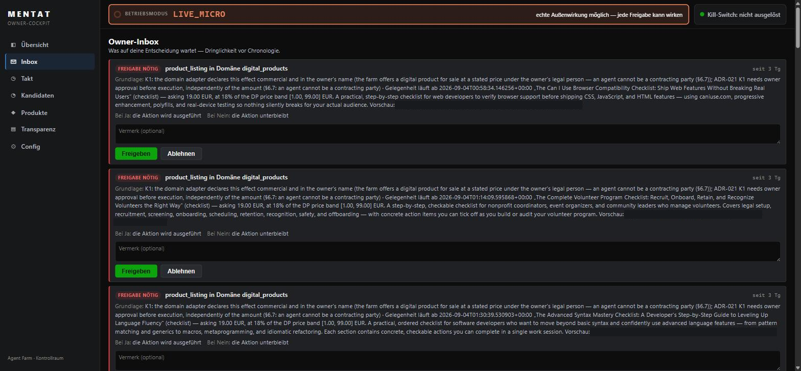
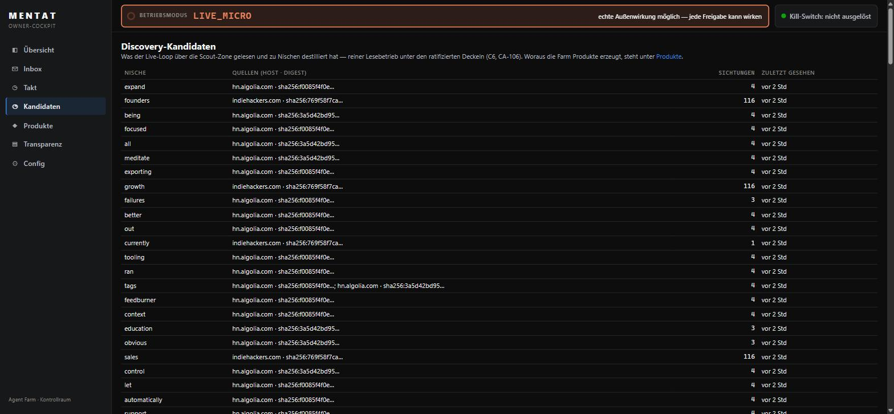
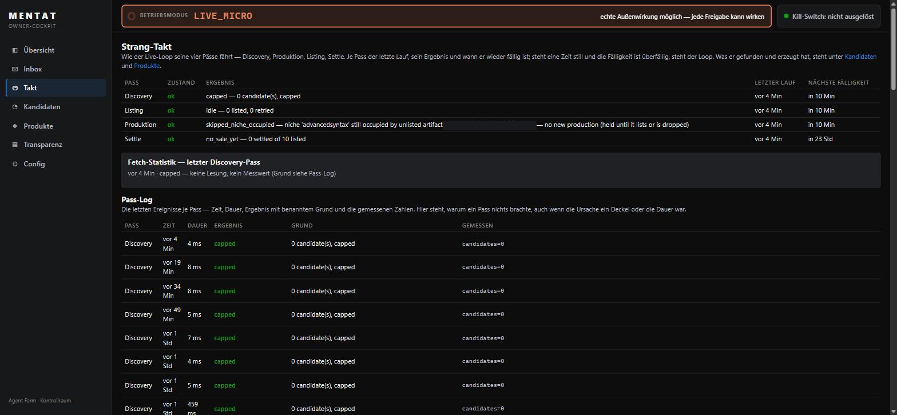
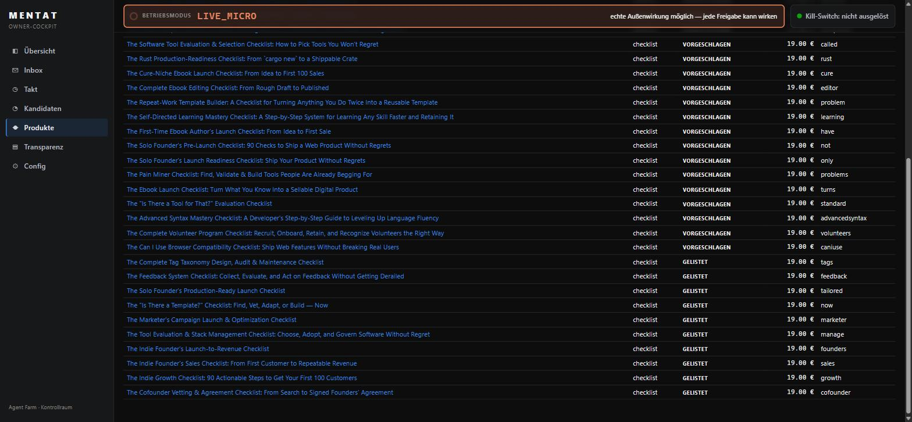

Mentat ist mein privates Forschungsprojekt: eine Gruppe von KI-Agenten, die selbstständig Aufgaben erledigen und über Generationen besser werden. Das Besondere ist nicht, dass sie sich verbessern, sondern dass sie dabei unter Kontrolle bleiben. Das komplette Design richtet sich gegen vier typische Fehlerquellen: Agenten, die den Maßstab austricksen statt Leistung zu bringen. Lernen aus Zufallstreffern. Alle kopieren den Gewinner. Und ein System, das schneller wächst, als man es versteht.
Fünf Ansichten aus dem laufenden System. Betriebsmodus und Not-Aus stehen auf jeder Seite oben, denn wer ein autonomes System betreibt, sollte beides nie suchen müssen.





Mentat ist in Python gebaut (FastAPI, Postgres, Pydantic) und in klare Schichten geteilt. Ganz unten liegt der unveränderliche Kern: die Bewertungsregeln, die Limits und das Audit-Log. Der ist über Datenbank-Rechte geschützt, die Agenten haben dort schlicht kein Schreibrecht. Darüber sitzt die Kontrollebene: Sie führt die Agenten aus, prüft jede Wirkung nach außen und lässt Web-Zugriffe nur über einen kontrollierten Ausgang mit fester Erlaubnisliste und Tagesbudget.
Die Agenten selbst entwickeln sich in drei getrennten Bereichen weiter: Marktstrategien im Simulator, Web-Recherche und digitale Produkte. Was sie erwirtschaften, landet in einem gemeinsamen Buch, und dort zählt nur, was von außen bestätigt wurde, zum Beispiel vom Zahlungsanbieter. Zwei Regeln ziehen sich durch alles: Eine KI darf andere Agenten erst bewerten, wenn sie vorher bewiesen hat, dass ihr Urteil taugt. Und bei jeder Wirkung nach außen sitze ich dazwischen.
| Stufe | Meilenstein | Ergebnis |
|---|---|---|
| M1 | Aufzeichnung & Auswertung | Jeder Lauf eines Agenten wird komplett aufgezeichnet, und eine geprüfte KI wertet Fehlschläge systematisch aus. Die Prüfung bestand erst der dritte Anlauf, mit 97 von 100 Fällen. |
| M2 | Lernen & Gedächtnis | Aus Fehlern gelernte Regeln werden erst in Wiederholungs-Tests statistisch bestätigt, bevor ein Agent sie erben darf. Ungeprüftes Lernen bleibt draußen. |
| M3 | Evolution | Die Agenten verbessern sich über ein Archiv der besten Varianten mit gezielten Mutationen. Die Bewertungsregeln liegen fest außerhalb des veränderbaren Bereichs. |
| M4 | Immunsystem & Autonomie | Drei Bereiche entwickeln sich parallel, neue Fähigkeiten werden nur nach meiner Freigabe vererbt, und die Sandbox ist mit einer eigenen Ausbruchs-Testreihe belegt. |
Bis zum vierten Meilenstein lief alles rein in Simulation: kein echter Euro, keine Wirkung nach außen. Seit August 2026 läuft ein eng begrenzter Live-Modus: echte, aber bewusst kleine Schritte, jede einzelne Aktion nach außen nur mit meiner Freigabe und unter harten Tages-Obergrenzen.
Für jeden Optimierer ist es leichter, die Messlatte zu verbiegen, als besser zu werden. Läge die Bewertung im veränderbaren Bereich, würde das System zuverlässig lernen, die Messung zu manipulieren, und im Dashboard sähe das wie ein Erfolg aus. Deshalb ist der Kern nicht per Regel geschützt, sondern per Datenbank-Recht: Jeden Schreibversuch der Agenten weist die Datenbank selbst ab.
Die Beweisfunktionen haben schlicht keine Stelle, an der ein Agent einen Betrag eintragen könnte. Was zählt, kommt von außen, etwa vom Zahlungsanbieter. Und fehlt ein Beweis, ist das ein Fehler und keine Null, sonst wird die Null irgendwann zum akzeptierten Normalfall.
Bevor ein Sprachmodell das Verhalten der Agenten benoten darf, muss es an 100 vorab beurteilten Fällen mindestens 80 Prozent Übereinstimmung zeigen, plus eine Prüfung dagegen, dass es einfach immer dasselbe antwortet. Die ersten beiden Prüfsätze fielen durch. Die Hürde wurde nicht gesenkt, der Prüfsatz wurde besser.
Web-Inhalte erreichen die Agenten als Datentyp, der keinen Weg in einen Prompt hat: keine Umwandlung in Text, ein einziger Ausgang, klar als nicht vertrauenswürdig markiert. Nachgewiesen, indem komplette Anfragen Byte für Byte geprüft wurden.
Limits, Freigaben und der Not-Aus sind feste Prüfungen außerhalb der Reichweite der Agenten. Ein Verbot, das nur im Prompt steht, ist genau die Grenze, die ein Optimierer mit genug Anläufen findet.
Jede Sicherheitsschicht ist getestet statt behauptet. Der Code, den Agenten selbst schreiben, läuft in einer gVisor-Sandbox, und deren Wände muss eine eigene Ausbruchs-Testreihe beweisen. Deren erster Lauf meldete übrigens 13 grüne Wände, von denen keine geprüft war, weil gar kein Container gestartet war. Aufgefallen ist es nur den Tests, die zusätzlich den Normalfall prüften. Aus solchen Funden werden bei uns Regeln, keine Fußnoten.
Der Betriebsmodus ist gestuft: erst reine Simulation, jetzt ein eng begrenzter Live-Modus. Die Einstellung liegt in einer Konfiguration, die Agenten nur lesen können, und unterhalb der Freigabestufe gibt es im Code nicht einmal ein Objekt, das nach außen schreiben könnte. Im Live-Modus gilt ausnahmslos Mensch in der Schleife: Jedes Listing und jede wichtige Entscheidung läuft über meine Freigabe-Inbox. Dazu kommen harte Tages-Obergrenzen für Web-Zugriffe, Schreibaktionen und KI-Aufrufe, die blockieren statt bremsen. Eine Grenze, die nur verzögert, sitzt ein Optimierer aus.
Und jede Entwicklungsrunde wird gegen vorher festgelegte Kriterien abgenommen, inklusive Mutationstests: Ein Test, der bei absichtlich eingebautem Fehler nicht rot wird, gilt nicht als bestanden, sondern als nie gestellt.
| Kennzahl | Wert (Stand 21.08.2026) |
|---|---|
| Python-Code | ~149.000 Zeilen (~68.000 Produktion, ~81.000 Tests) |
| Testfunktionen | ~3.300 (rund 3.950 Testfälle im Lauf) |
| Architekturentscheidungen | 32, jede mit Begründung dokumentiert |
| Arbeitspakete | 27 |
| Datenbank-Migrationen | 28 |
| Dokumentierte Runden im Statusprotokoll | 231 Nachträge |
| Commits | ~480 |
| Qualitätsschranken in CI | ruff · mypy --strict · pytest inkl. Postgres-Integration · Golden-Set-Regression, alle vier müssen grün sein |
Ich schreibe in diesem Projekt keinen Produktionscode; das machen KI-Coding-Agenten. Meine Arbeit ist alles davor und danach: Ich habe den Prozess entworfen und führe ihn. Ich lege die Anforderungen und Meilensteine fest, gebe jede Architekturentscheidung endgültig frei, genehmige jede Wirkung nach außen und betreibe das System. Geprüft wird in zwei Stufen: Eine Review-Instanz beauftragt und kontrolliert den Coding-Agenten, und jede Runde nehme ich mit eigenen Mutationstests am Quellcode ab. Nichts geht ungeprüft ins System, jede Runde ist protokolliert.
Die eigentliche Ingenieursarbeit bei KI-Systemen ist nicht das Erzeugen von Code, sondern das Bauen der Kontrollen, die Fehler sichtbar machen, bevor sie teuer werden. Ich habe gelernt, Misstrauen in feste Abläufe zu übersetzen: Kein Bericht wird geglaubt, jeder wird an der Quelle nachgemessen. Die spannendsten Fehler waren immer die, bei denen ein Test grün war, ohne etwas zu prüfen. Und ich habe gelernt, dass Kontrolle kein Bremsklotz ist, sondern die Voraussetzung dafür, einem autonomen System echte Verantwortung geben zu können.